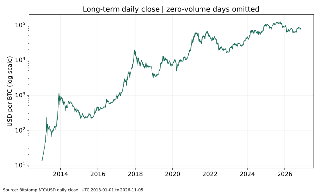
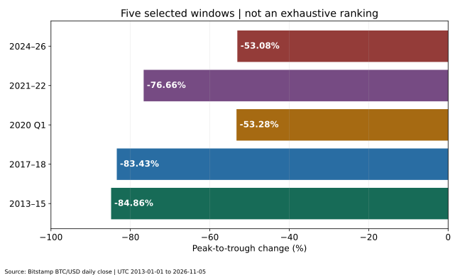
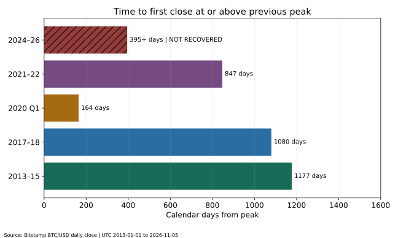
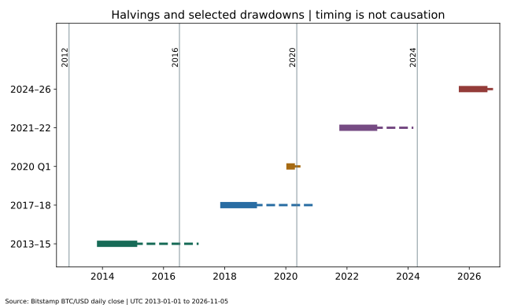
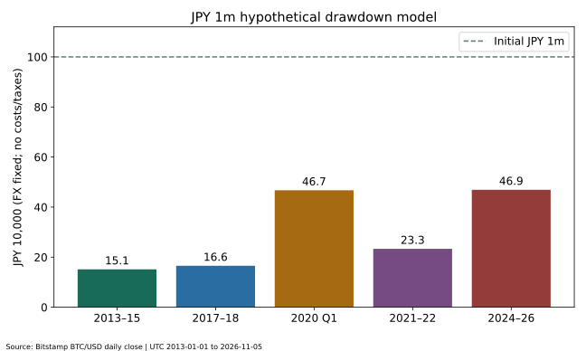

ビットコインはなぜ暴落する？
過去の下落原因と回復までの期間を徹底比較
公開・更新：（UTC）
著者・編集：トピック基地／調査・取得日：2026年11月6日（UTC）
ビットコインの暴落は、一つのニュースだけで説明できるとは限りません。過熱した期待、借入や証拠金を使った取引、流動性の低下、金融環境、取引所への信用不安などが重なると、売りが売りを呼ぶことがあります。本稿はBitstampのBTC/USD日足終値を使い、5つの対象期間の下落率と高値回復までの時間を同じ方法で比較します。
- 比較するのは単一取引所の米ドル建て終値。市場全体の瞬間的な最高値・最安値ではありません。
- 「底までの日数」「ピークから回復まで」「底から回復まで」を分けます。未回復の事例も含みます。
- 過去に回復した事実は、今後の回復や同じ周期を保証しません。100万円の例は為替固定の仮定です。
一般的な情報と条件を限定した分析です。売買や特定の保有期間を推奨しません。個別の税務については暗号資産の税金と申告も参照し、必要に応じて専門窓口へ確認してください。編集・訂正方針に基づき、誤りが判明した場合は修正します。
1. ビットコインはなぜ暴落する？価格が大きく動く仕組み
買いたい価格と売りたい価格が急に変わる
市場価格は、その時点で成立する売買によって決まります。将来への期待が先行して買いが増えていても、期待の見直しや資金需要で売りが増え、同じ価格で受け止める買い注文が少なければ、価格は下がります。時価総額が大きいことと、任意の数量を同じ価格で売れることは別です。板の厚みや時間帯、取引所によっても約定価格は異なります。
ビットコインは株式のような企業利益への請求権や配当を持ちません。評価の拠り所として利用・保有需要、供給制約、ネットワークへの信頼などが意識されますが、将来の需要は確定していません。金融庁も暗号資産の価格変動や取引内容を理解する必要性を案内しています。［12］
レバレッジと流動性の組合せ
証拠金に対して大きなポジションを持つ取引は、損失も拡大します。相場が逆行して必要証拠金を維持できなくなると、取引条件に従ってポジションが清算される場合があります。買い持ちの清算が売り注文につながり、薄い板でさらに値段が下がる、という増幅経路が考えられます。CFTCも、暗号資産取引の変動とレバレッジによる損失拡大を注意喚起しています。［5］
ただし、この一般的な仕組みを説明するだけでは、特定の日の下落の何割が清算によるものかは分かりません。本稿のOHLCデータには建玉や強制清算の内訳がないため、その寄与率を推計した数字は載せません。
2. 分析条件：同じ取引所・米ドル建て・UTCの日足終値でそろえる
| 提供元・取引市場 | Bitstamp公式OHLC API、BTC/USD現物。同取引所で観測した価格であり世界共通の統一価格ではない |
|---|---|
| 対象期間 | 2013-01-01〜2026-11-05。2026-11-06の取得時点で未完了の日足を含めない |
| 価格と時刻 | APIのcloseのみ。Unix timestampはUTC日足区間の開始。日付Dの終値はD翌日00:00 UTCの区切り（日本時間09:00）。日中high/lowは極値分析に使わない |
| 通貨 | 1 BTC当たり米ドル。実際の円建て投資収益は計算しない |
| データ点 | 5,057暦日。出来高ゼロの2015-01-06〜08の3行は実取引終値として除外し、5,054日を分析。欠けた価格を補間しない |
| 抽出範囲 | 2013–2015、2017–2018、2020年1–3月、2021–2022、2024–2026-11-05の5期間。全暴落を網羅するランキングではない |
APIが返す日付と、日本のニュースが「その日に付けた」と報じる日付は一致しないことがあります。例えばUTC日付の終値は日本では翌朝に確定します。同じ日でも日中安値は終値より低い場合があります。終値と日中価格を入れ替えると、下落率も回復日も変わります。［1］
ピーク・底値・回復日をどう選んだか
各対象期間の各日について、その日以前の同期間内の最高終値を求め、「当日終値÷それまでの最高終値−1」を計算します。その比率が最も低くなるピークと底の組を、その期間の最大下落として採用します。期間全体の最高値の後だけを見る方法ではなく、先に高値、後に底という順序を守ります。同じ高値・同率の底が複数あるときは最初の観測を採用します。
回復日は、底の後に、選んだピークの終値以上へ初めて戻った有効日足の日付です。回復探索は抽出期間の末日で打ち切らず、取得最終日まで続けます。底まで・回復までの日数は暦日の差で、取引日数ではありません。未回復の場合に日数を0としたり、将来の回復日を予想したりしません。
2020年1–3月は、その年初からの局面を測る局所的な比較です。2017年の史上高値を基準にした長い下落局面とは異なります。5期間の比較は統計的に独立した5標本でも、世界中の暴落の完全な順位でもありません。取引停止期間や単一市場の制約もあるため、「全市場でこの日に底打ちした」とは解釈できません。

3. 主要5期間の最大下落率と回復日を比較
以下の価格は米ドル建て日足終値です。日付はすべてUTC区間ラベル。比率は計算時に丸めず、表示時だけ小数第2位へ丸めています。
| 抽出期間 | ピーク・USD | 底・USD | 最大下落率 | ピーク→底 | 最初の回復日 | ピーク→回復 | 底→回復 |
|---|---|---|---|---|---|---|---|
| 2013–2015 | 2013-12-04 $1,132.01 | 2015-01-14 $171.41 | -84.86% | 406日 | 2017-02-23 | 1,177日 | 771日 |
| 2017–2018 | 2017-12-16 $19,187.78 | 2018-12-15 $3,179.54 | -83.43% | 364日 | 2020-11-30 | 1,080日 | 716日 |
| 2020年1–3月 | 2020-02-14 $10,364.04 | 2020-03-12 $4,841.67 | -53.28% | 27日 | 2020-07-27 | 164日 | 137日 |
| 2021–2022 | 2021-11-08 $67,559.00 | 2022-11-21 $15,766.00 | -76.66% | 378日 | 2024-03-04 | 847日 | 469日 |
| 2024–2026 | 2025-10-06 $124,728.00 | 2026-06-30 $58,526.17 | -53.08% | 267日 | 未回復 | 395日経過・未回復 | 未回復 |
各行の期間は上の分析条件で固定しています。回復に時間がかかった局面を短いものに見せるため、途中で基準価格を切り下げていません。一方、2020年のような局所高値を使う行は、その基準の違いが読者に分かるよう範囲を表示しています。
4. 2013〜2015年：価格下落と取引所への信用不安
この期間の最大下落は、Bitstamp終値で2013年12月4日の1,132.01ドルから2015年1月14日の171.41ドルまでです。後述の回復日まで含めると、下落の深さだけでなく、資金が長く拘束され得ることが分かります。
確認できる出来事として、MtGoxの破産管財人報告は、同社が2014年2月28日に民事再生手続開始を申し立てたことを記載しています。またBitstamp自身も、2015年1月のウォレット侵害とサービス再開を公表しています。これらは、当時の取引所保管・事業者信用のリスクを示す一次情報です。［3］［2］
ただし、この二つの出来事だけで2013年末からの全下落を説明することはできません。MtGoxの申立ては選定ピークより後であり、Bitstampの障害も下落期間の一部です。期待の反転や流動性の変化は考え得る経路ですが、本稿はそれぞれの寄与を特定していません。
Bitstampが返した2015年1月6〜8日の出来高ゼロ行は、価格が動かなかった証拠としては扱いません。この3日は図を途切れさせ、ピーク・底・回復の候補から除外しました。採用された極値・回復日は出来高がある日です。
5. 2017〜2018年：期待の拡大と、その反転を分けて見る
2017〜2018年の対象期間では、2017年12月16日の19,187.78ドルから2018年12月15日の3,179.54ドルへの下落が最大でした。一般に語られる「約2万ドル」と異なり、この比較では特定市場の日足終値を正確な基準にしています。
CMEは2017年12月18日を取引日とするビットコイン先物の上場を案内しました。市場参加手段が広がったことは確認できますが、上場とピークが近いことだけで「先物上場が暴落を起こした」とは結論できません。期待の拡大・利益確定・買い需要の変化など、価格を動かす経路は複数あります。［4］
「バブル崩壊」という呼び方は、この大きな上昇後の反落を説明する表現です。本稿のデータだけで当時の適正価格や投機需要の割合を測定したわけではありません。過去の最高値に近いことだけを買い根拠にすると、下落を受け止める資金計画が不足する可能性があります。
6. 2020年3月：市場全体の資金需要が強まった局面
2020年1〜3月の局所比較では、2月14日の10,364.04ドルから3月12日の4,841.67ドルまで下落しました。これは日中の最安値を使った比較ではありません。回復の基準も、2017年高値ではなく、この局所ピークです。
FRBの2020年3月15日の声明は、新型コロナウイルスによる経済活動への影響や金融環境の悪化を踏まえた対応を説明しています。市場全体の不安や現金需要が強かったことを考える資料になりますが、3月12日のBTC下落を、その後の声明が引き起こしたとする時系列の説明はできません。［6］
危機時には「安全と思っていた資産を含めて現金化する」という行動も想定されます。ただし、取引主体ごとの売却目的はこの価格データに含まれません。株式と同時に下落した場面があっても、常に同じ相関で動くとか、分散効果が必ずなくなるとは言えません。
7. 2021〜2022年：金融引き締めと暗号資産企業の信用問題
この対象期間は、2021年11月8日の67,559.00ドルから2022年11月21日の15,766.00ドルまでが最大下落でした。ピークと底の間には1年以上あり、単日のニュースによる値動きだけを測っていません。
FRBは2022年3月16日に政策金利の目標レンジを0.25〜0.50%へ引き上げ、追加の引上げを想定する方針を示しました。リスク資産を保有する機会費用や資金調達環境を考える材料ですが、この政策だけで下落率全体を説明したとは言えません。選定ピークは利上げ開始より前です。［7］
一方、シカゴ連銀の研究は、2022年の暗号資産プラットフォームからの資金流出や破綻を分析しています。SECは2022年12月13日に、FTXに関して投資家を欺いたとして創業者を提訴したと公表しました。発表当時の訴状に基づく主張と、その後の司法判断は区別する必要があります。［8］［9］
金融環境の変化と、暗号資産業界内の信用不安が同じ年に存在したことは確認できます。どちらが何%の下落を生んだかは、本稿では推定していません。保有資産の市場価格だけでなく、取引所から引き出せるかというリスクも別に考える必要があります。
8. 2024〜2026年：制度の進展後も大きな下落は残る
SECは2024年1月10日に、複数の現物ビットコインETP持分の上場・取引を承認したと公表しました。同声明はビットコインそのものへの承認・推奨とは異なることも説明しています。投資手段の制度整備が進んだことと、価格の安全が保証されることは別です。［10］
取得したBitstamp終値では、2024年初〜2026年11月5日の対象期間の最大下落は、2025年10月6日の124,728.00ドルから2026年6月30日の58,526.17ドルまででした。取得最終日の終値は75,971.22ドルで、選定ピークを回復していません。
この節の2025〜2026年の数値は、取得できた価格系列からの観測結果です。大口保有者の売却、特定の政策発言、地政学ニュースなどの寄与は確認できていないため、もっともらしい説明で補いません。2026年11月全体の実績でもなく、11月6日以後の値動きは含みません。
9. 下落率ランキング：分析対象5期間の範囲内で比較
大きく下落した順は以下の通りです。これは本稿で事前に定めた5期間の順位であり、2013年以前を含む全史上の暴落率ランキングではありません。観測期間の長さや局所高値の取り方も異なるため、行の順位を将来の危険度に置き換えないでください。
- 2013–2015：-84.86%
- 2017–2018：-83.43%
- 2021–2022：-76.66%
- 2020年1–3月：-53.28%
- 2024–2026：-53.08%

10. 高値回復までの期間：「底から」と「ピークから」は違う
買った日の価格を取り戻すまでの待ち時間を考えるなら、ピークから回復までが一つの目安になります。一方、底を事後的に選んだ「底から回復まで」は短くなります。実際の投資で底をあらかじめ知ることはできないので、後者だけを示すとリスクを小さく見せてしまいます。
本分析の回復は、選定ピーク以上へ終値が最初に戻ったことを意味します。その後ずっと高値を維持したことや、同じ日に売買できたことを保証しません。取引手数料・スプレッド・税金・円高を考慮すると、米ドル価格が元に戻っても個人の円建て損益は元に戻らない場合があります。

未回復の事例を除いて「平均すれば何年で戻る」と示すと、回復したものだけを選ぶ偏りが生じます。将来の回復時期の予測値として平均日数は掲載しません。長期保有を予定していても、生活上必要になる時期までに回復するとは限りません。
11. 半減期と暴落は関係する？時系列と因果を区別する
ビットコインのブロック補助金は210,000ブロックごとに半減します。Bitcoin.orgの履歴で、2012年11月28日、2016年7月9日、2020年5月11日、2024年4月20日の半減期を確認しました。新規供給の仕組みに関する予定であって、需要や市場価格の予定ではありません。［11］

半減期と上昇・下落を同じ図に置くと、並び順は確認できます。しかし事例は少なく、金融政策や市場構造も変化しています。2020年3月の急落は、その年5月の半減期より前です。「半減期の後だから必ず暴落」「4年待てば必ず回復」という法則は、この図からは導けません。
供給の仕組みはビットコインの半減期の記事、周期説の限界は4年周期を検討した記事で補足しています。似た形のチャートを探すだけでなく、成立条件が変わっていないかを確認してください。
12. 金利・株式市場・地政学・大口売却をどう考えるか
| 論点 | 確認・分析できること | 断定しないこと |
|---|---|---|
| 金利・金融政策 | FRBの発表日と決定内容。資金調達費用・機会費用を通じた経路を考える | 利上げだけでBTC下落率全体を説明したとはしない |
| 株式との関係 | FRB研究は暗号資産と金融システムの接点・脆弱性を検討している | 本稿は株価との相関係数を計算していない。恒常的な連動や逆相関を主張しない |
| 規制変更 | SECのETP承認等の公表内容と日付 | 規制の進展が価格下落を防ぐとはしない |
| 地政学リスク | 不確実性が資金需要・リスク許容度を変える可能性を考える | 今回の下落と特定事件との因果は未検証。数字や事件名を補わない |
| 大口保有者 | 大きな売り注文は、板の厚みによって価格へ影響し得る | ウォレット移動を売却と同一視しない。売り主や下落への寄与率は不明 |
FRBのデジタル資産に関する研究は、価格評価、取り付け、レバレッジ、既存金融とのつながりなどを論点にしています。研究著者の見解であり、FRB理事会の公式見解と同一とは限りません。これは複数のリスク経路を調べるための資料であって、本稿の各日付の下落原因を特定した調査ではありません。出来事との時間的な一致、統計的な相関、因果関係は分けて読みましょう。［13］
13. 取引所破綻とレバレッジ清算は、価格下落以外の損失も生む
現物を借入なしで保有していても、預け先の破綻・流出・出金停止で資産にアクセスできなくなる可能性があります。市場価格が回復しても、破綻した事業者から同じ数量が返還されるとは限りません。価格リスクと保管・取引先リスクは別です。自己管理にも秘密鍵の紛失や誤送付のリスクがあり、単純に一方が無条件で安全とは言えません。
一方、レバレッジ取引では、最終的に価格が戻る前に清算されることがあります。「数年待てば戻る」という過去の現物チャートを、証拠金取引の耐久力の根拠にはできません。清算条件や追加損失の可能性は商品・事業者で異なるので、契約を確認する必要があります。［5］［8］
14. 100万円を投資したら、暴落でいくらになる？
各局面のピークで100万円相当を投じ、同じ米ドル建て下落率だけが起きると仮定します。為替レート固定、手数料・税金・スプレッドなしの説明用モデルで、実際の円建てBTC投資実績ではありません。評価額は100万円×底終値÷ピーク終値、表示は1円へ四捨五入しています。
| 期間 | 当初元本 | 底の評価額 | 元本との差 | 元値へ必要な上昇率 |
|---|---|---|---|---|
| 2013–2015 | 1,000,000円 | 151,421円 | -848,579円 | 560.41% |
| 2017–2018 | 1,000,000円 | 165,707円 | -834,293円 | 503.48% |
| 2020年1–3月 | 1,000,000円 | 467,160円 | -532,840円 | 114.06% |
| 2021–2022 | 1,000,000円 | 233,366円 | -766,634円 | 328.51% |
| 2024–2026 | 1,000,000円 | 469,230円 | -530,770円 | 113.11% |

50%下落した資産は50%上がっても元に戻らず、100%の上昇が必要です。80%下落なら元値へ400%の上昇が必要になります。これは「元値÷底値−1」という算数であり、その上昇が将来起きる予測ではありません。大きな損失を取引回数やレバレッジで急いで埋めようとすると、さらに損失が拡大する可能性があります。
15. 暴落時に避けたい投資行動
- 生活費や近く使う資金を追加する：回復が遅れたときに必要な支出を賄えないおそれがあります。
- 損失を取り返すため倍率を上げる：現物の回復より先に清算され得ます。
- 安くなったことだけで買い増す：価格低下が割安さを保証するわけではありません。保有割合や損失許容額を確認します。
- SNSの断定をそのまま使う：「底確定」「必ず何倍」は検証可能な根拠と区別してください。
- 税務・取引履歴を後回しにする：損失があっても別の取引に申告上の所得がある場合があります。円への出金だけで判断しないでください。
暴落時に売るか持ち続けるかを、本稿が一律に決めることはできません。資金の使用予定、資産全体の割合、借入の有無、保管方法を事前に整理しておく方が、その場の予想に全面依存するより判断条件を明確にできます。
16. 長期保有でも消えないリスク
過去のBTCは、回復した局面だけでなく、長い含み損や未回復局面も経験しています。生き残った資産の過去チャートだけを見ると、将来も同じ結果になるように感じやすくなりますが、技術・規制・需要・競争環境は変化します。
さらに、購買力の低下、円高、コストや税負担を考慮すると、名目の米ドル高値回復と実生活での資金回復は同じではありません。本稿は物価調整後の実質回復日も計算していません。株式との仕組みの違いはビットコインと株式投資の長期比較、他の暗号資産の固有リスクはETH・SOL・XRP比較を参照してください。
17. よくある質問
- Q. 暴落は何%からですか？
- 市場共通の一つの定義はありません。本稿は暴落を判定する一律の閾値を設けず、明示した5期間の最大終値下落率を比較しています。
- Q. 検索で見た最高値の日付と違うのはなぜ？
- 取引所、通貨、日中価格か終値か、UTCか日本時間かで変わります。本稿はBitstamp BTC/USDのUTC日足終値に統一しています。
- Q. 何年待てば必ず戻りますか？
- 保証できません。表は過去の観測で、直近の対象局面には未回復の行があります。期限を伴う支出に過去の回復日数をそのまま当てはめないでください。
- Q. 半減期の後は必ず暴落しますか？
- そのような法則は確認していません。新規供給の変化と市場需要・金融環境は別で、事例数も限られています。
- Q. 2020年の回復が短いのは安全だったから？
- 局所高値を基準にしているため、2017年高値を基準にする場合と条件が違います。日数の短さだけで安全性を判断できません。
- Q. 100万円の表は日本で投資した実績ですか？
- 違います。米ドル下落率を為替固定で当てはめたモデルです。実際の円建て評価額にはドル円や取引条件が影響します。
- Q. 下落しているなら税金は関係ありませんか？
- 保有中の含み損と、売却・交換・報酬等の所得計算は異なります。第7号の税金・確定申告を参照してください。
まとめ：下落の深さと、待てる時間を両方確認する
過去の下落を比べるときは、同じ価格の定義で測り、ピークから底、ピークから回復を分けて確認することが重要です。ニュースの理由付けは、確認された出来事と、価格への影響に関する解釈を区別します。未回復の事例や保管リスクも含め、将来の回復を前提にしすぎない資金計画を考える材料として利用してください。
データと再現手順
日足OHLC・出来高CSV、計算結果JSON、グラフ入力、取得URL・日時・ハッシュ、極値・回復日の個別再取得記録を公開します。配布した計算コードと別実装の監査コードで照合できます。再取得コードは新しい保存先へ出力し、監査済みデータを上書きしません。
再現コマンドと制約は計算方法へまとめています。提供元が過去データを訂正すれば再取得値は変わり得ます。差が出た場合は既存スナップショットを黙って置き換えず、再監査します。日付・期間の選び方を変えた結果を同じ分析の再現と呼びません。
参考資料
調査日：2026年11月6日（UTC）。価格対象：2013-01-01〜2026-11-05。価格の観測、公式発表の事実、編集部の解釈を区別しています。
- Bitstamp公式API仕様（OHLC） — step=86400、close、Unix時刻。取得リクエストURLはデータ記録に保存。
- Bitstamp：2015年1月9日のサービス再開発表 — ウォレット侵害と運用復旧。
- MtGox：破産管財人報告（2014年7月23日、PDF） — 2014年2月28日の民事再生申立て等。
- CME：ビットコイン先物の上場通知（2017年12月） — 取引日12月18日。
- CFTC：暗号資産取引リスクの注意喚起 — 変動・レバレッジ・損失リスク。
- FRB：2020年3月15日FOMC声明 — 感染症、経済・金融環境への対応。
- FRB：2022年3月16日FOMC声明 — 金利目標引上げと方針。
- シカゴ連銀：2022年の暗号資産プラットフォーム取り付けの分析（2023年） — 資金流出・信用問題。
- SEC：FTX創業者への提訴発表（2022年12月13日） — 当時の訴状に基づく主張を記載。
- SEC：現物ビットコインETP承認に関する声明（2024年1月10日） — 承認の範囲と注意。
- Bitcoin.org：半減期の仕組みと履歴 — ブロック高と実施日。
- 金融庁：暗号資産の利用者向け案内 — 価格変動・事業者確認等。
- FRB：デジタル資産の金融安定への影響（2022年8月） — 複数の脆弱性・金融システムとの接点。